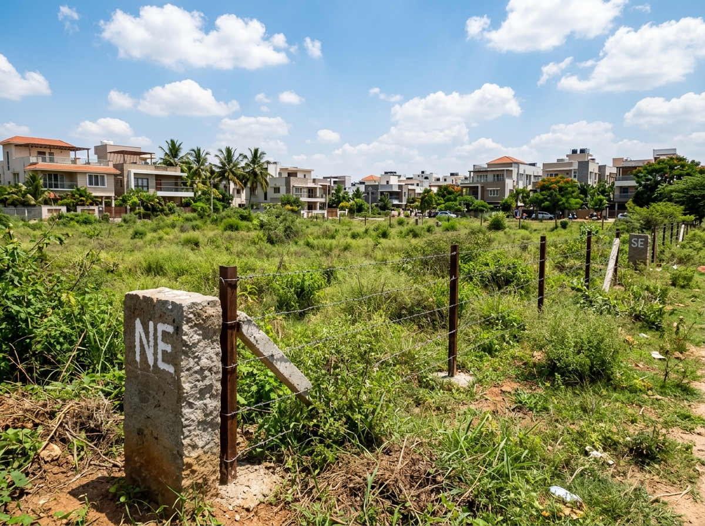
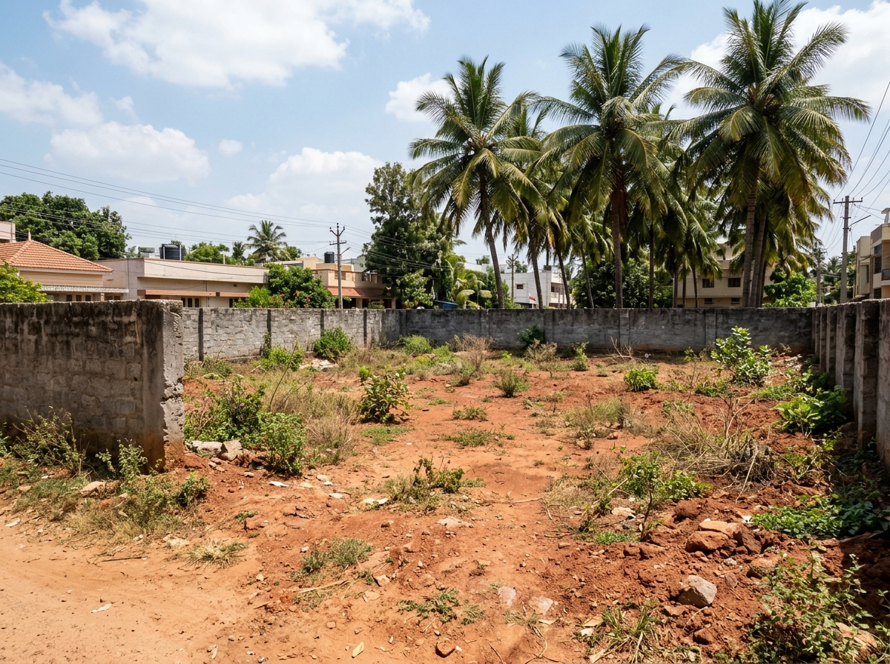
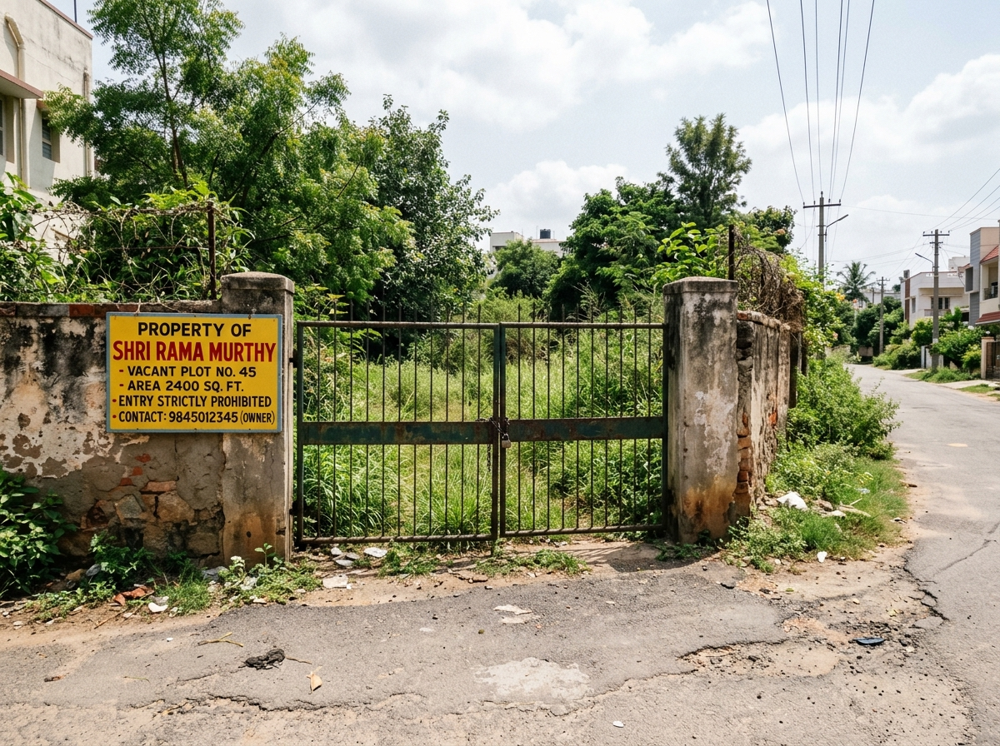
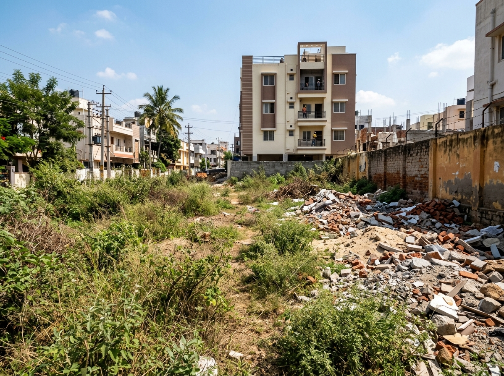

PropVigil inspects land, sites and flats on a fixed schedule and sends you a dated, geotagged report. You see exactly what we saw, on the day we saw it. For owners living outside Bengaluru and outside India.

"We live in the US and haven't visited Bangalore in three years. PropVigil sends us crisp, timestamped photos and video of our plot every month. Total peace of mind."
"Had recurring dumping issues on our site along Kanakapura Road. PropVigil got it cleared, repaired the compound fence, and has kept it completely clean since."
"The fixed camera angles make it obvious if anything changes. Real relief having a named person actually inspecting the flat and checking society notices."
Different properties fail in different ways. Tell us which one is yours.
Waste and debris get dumped. Boundary stones go missing. A neighbour's compound wall moves. Someone parks, stores material, or builds a shed. A municipal notice is issued and nobody tells you. Years pass and the site is no longer quite the shape it was.
Complete 10-point audit recorded on every visit, listed in full in your report.
You get a dated report with geotagged photographs from fixed camera angles.
The first clearing — accumulated waste, construction debris, overgrowth — is quoted after we have seen the site, because the cost depends on the volume and the number of disposal trips. Once the site is clear, keeping it clear is part of your annual plan and is not billed again.
Other work — fencing, gate and boundary marker replacement, signage, or resolving a municipal notice — is quoted before it starts and carried out only after you approve it in writing.
An empty flat deteriorates faster than empty land. Damp spreads behind furniture. A slow leak from the flat above goes unnoticed for a year. Seals perish, taps seize, drains dry out and let smells in. Pests settle. Society dues accumulate quietly until there is a notice on the door.
Plus a further ten checks on every visit, listed in full in your report.
Room-by-room photographs and recorded meter readings. We handle damp/seepage repairs, plumbing, electrical fixes, pest control, deep cleaning before move-in, and society dues payments. Each job is quoted and approved in writing first.
Rent arrives late, then later, then with explanations. The flat is sublet without your knowledge. Damage accumulates and is only discovered at handover, by which time the deposit argument is already lost. Society compliance lapses in your name.
Move-in and move-out condition reports with photographs so deposit arguments are settled on clear evidence. We follow up on late rent, coordinate repairs, and handle tenant handovers. Note: We do not collect your rent; rent is paid by tenant directly to your bank account.
Often the owner does not know precisely what they own. Boundaries are described by landmarks that no longer exist. A relative or long-standing occupant is in possession. Records are incomplete. Nothing is urgent until it suddenly is.
We locate the property, photograph it, record its present condition and who is in occupation, and give you a written account of what is actually there. What you do next is your decision — and if it needs a lawyer, we will say so plainly.
Clearing years of accumulated waste and overgrowth, re-establishing unclear boundaries on the ground, securing the plot with fencing and signage, followed by regular scheduled visits so the property does not drift again.
Send the location on WhatsApp. Site number, address, or a dropped pin.
A named person goes to your property. Not a subcontractor you have never heard of — you are told who is going.
Within 2–3 working days. Dated, geotagged photographs, a short video, and written observations. Sent on WhatsApp and email.
The site does not go back to where it was between visits.
The first clearing is quoted after we have seen the site — how much has been dumped, how overgrown it is, how many trips it takes to remove. You get that figure in writing before anything starts.
After that, keeping it clear is part of your annual plan. You are not billed for cleaning again.
Anything else — fencing, gate or compound wall repair, boundary markers, resolving a municipal notice — is quoted separately. Nothing is done, and nothing is spent, without your approval in writing.
You cannot go and look yourself. So the report has to stand up on its own.
Every photograph carries the GPS coordinates of where it was taken and the date and time it was taken. Not typed underneath — inside the file. Ask for the original files any time and we will send them.
We photograph from the same fixed positions on every visit. Same corner, same angle, same frame. One report tells you how your property looks today. Four reports tell you whether it is holding steady or slipping.
Every report names the person who visited. If something in it does not make sense, there is someone to ask.
A walk-through with every report. Photographs show you what we chose to show you. The video shows you the rest.
Real geotagged before and after photographs provided with every inspection report.


| Inspection Check Point | Status | Observation Details |
|---|---|---|
| 1. Boundary markers | ✓ PASS | All four present, positions unchanged |
| 2. Compound wall / fencing | ✓ PASS | Intact. Minor rust on gate hinge |
| 3. Encroachment | ✓ PASS | None observed |
| 4. Waste & debris | ACTION ADVISED | Construction debris, northern edge — new since last visit |
| 5. Overgrowth | ACTION ADVISED | Knee height across site — clearing advised |
| 6. Access road | ✓ PASS | Motorable. No obstruction |
| 7. Ownership signage | ✓ PASS | Present and legible |
| 8. Standing water | ✓ PASS | None |
| 9. Notices or markings | ✓ PASS | None on or near the site |
| 10. Neighbouring activity | ✓ PASS | Construction on adjoining plot — monitoring |
We photograph from the same four positions on every visit, so consecutive reports can be compared directly. Each image carries intact GPS metadata.

Wide shot showing full site, visible boundaries and adjoining plot.

Opposite wide shot. Together A and B cover the whole site.

Access, gate, ownership signage and approach condition.

Ground condition, overgrowth height and dumping examination.
The report is not the end of the job. It is how we agree what the job is. Once you know what your property needs, we are the ones who do it — quoted first, approved by you, photographed when it is done.
We do not ask for Power of Attorney, and we do not hold your original title documents. We have never taken either, and we do not intend to.
Everything we do — visiting, photographing, clearing, checking a boundary, meeting a plumber — is done under a service agreement and your written instruction. None of it requires us to stand in your place legally.
If a specific act ever needs formal authorisation, we will tell you what it is, and you should have your own lawyer draft a limited authorisation covering that act alone. We will not draft it, and we will not suggest anything broader.
We are a property care service. We are not your legal representative.
Bengaluru's civic bodies issue notices that place obligations on property owners, with deadlines and recovery costs attached. If you do not live here, you will not see them. We track them and post them here as they are issued, with the original document available on request and the relevant bye-law cited.
Ref CC/PS/PR/240/2026-27 under Solid Waste Management Bye-laws 2020 & Section 285(2) of Greater Bengaluru Governance Act, 2024.
Read full notice & rate scheduleV P Srinivasa has worked in real estate in Bengaluru since the early 2000s. In that time, people close to him — friends, relatives, former clients who had moved abroad — would ask him to go and look at a site. Check whether anything had been dumped. See if the fence was still standing. Send a photograph.
He did it because they asked, and because there was nobody else they could ask.
Over the years it became clear how many owners are in that position and do not have a Srinivasa to call. Plots bought as an investment ten years ago, in a city the owner now visits once every three years. Nobody dishonest, necessarily — just nobody looking. So we made it a service, with a schedule, a report and a price, instead of a favour.
V P Srinivasa, Founder
+91 92421 43775 — call or WhatsApp
PropVigil is a unit of Sai Krupa Associates, based in Bengaluru. We work on properties in and around Bengaluru, for owners living anywhere in the world.
| Registered entity | Sai Krupa Associates |
| Address | Bengaluru, Karnataka |
Every photograph in your report carries GPS coordinates and a timestamp. The metadata is intact and we will send you the original files if you ask.
We shoot from fixed positions each time, so consecutive reports show the same scene with the light, the season and the ground conditions different. Reused images are obvious in that format. The metadata settles it either way.
No. We do not take it and we do not hold original documents.
Only for work you have approved. Rent is paid to you directly by your tenant. We verify and follow up; we do not collect.
The first clearing of a site is quoted as a single figure before anything starts. After that, cleaning is part of your annual plan and is not billed again. Other work — fencing, a repair, a boundary marker, resolving a municipal notice — is quoted each time. You approve in writing, and you get photographs when it is done. If a job turns out to need more than was quoted, we stop and come back to you with a revised figure. We do not carry on and bill you afterwards.
We tell you the same day, with photographs, rather than waiting for the scheduled report. Then we tell you what your options are, what each would cost, and whether it needs a lawyer rather than us.